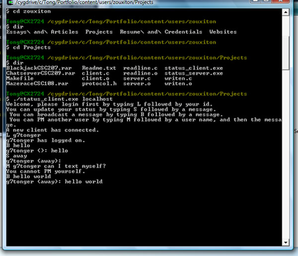

Chat Server Project (Designed using C in 2008):
This project was designed for CSC209 and incorporated the use of sockets and pipes to create a chat-server limited to a basic four commands.

Download Source Code